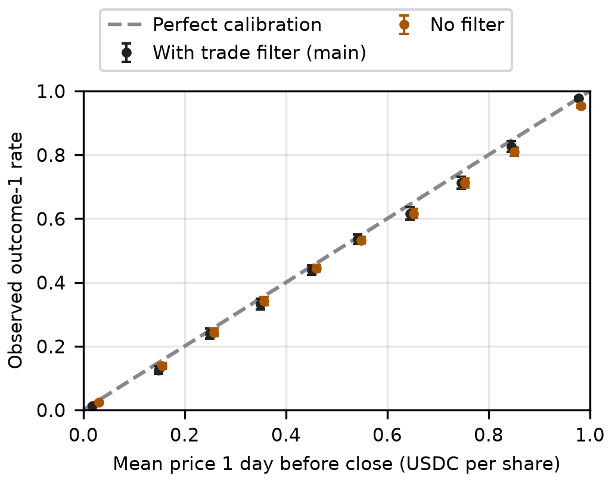
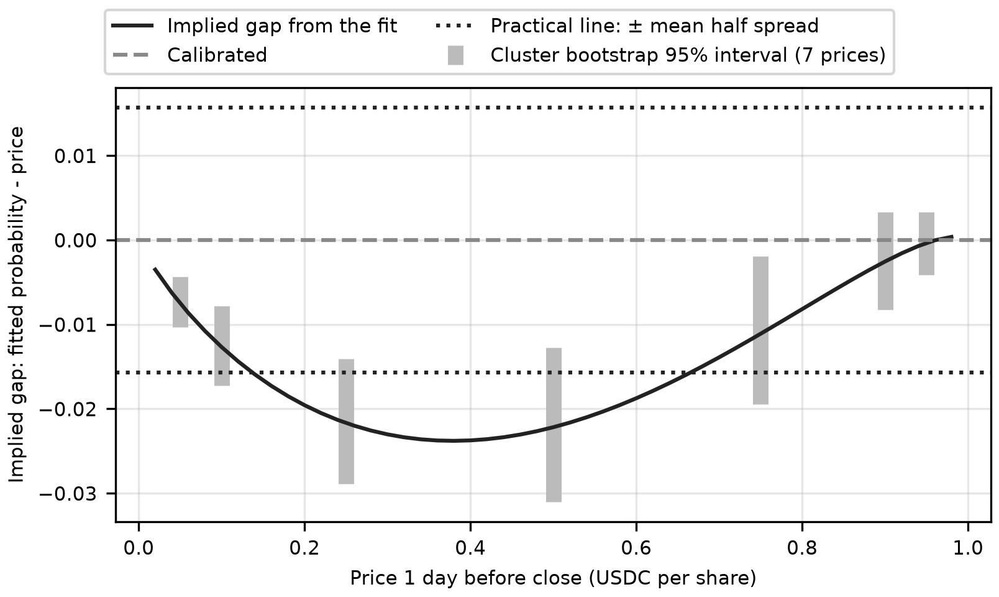
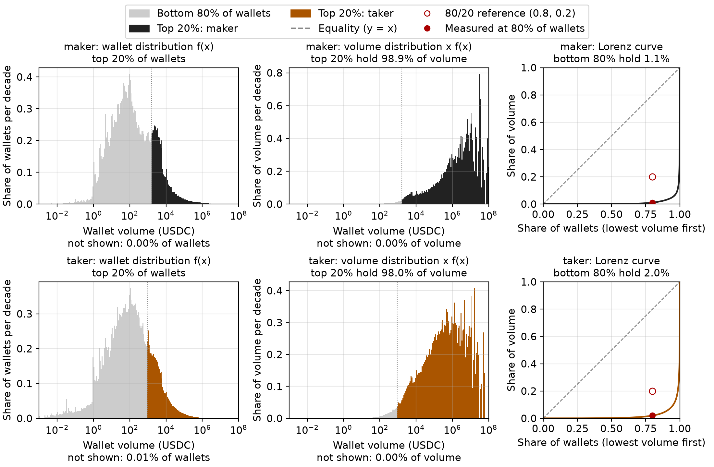
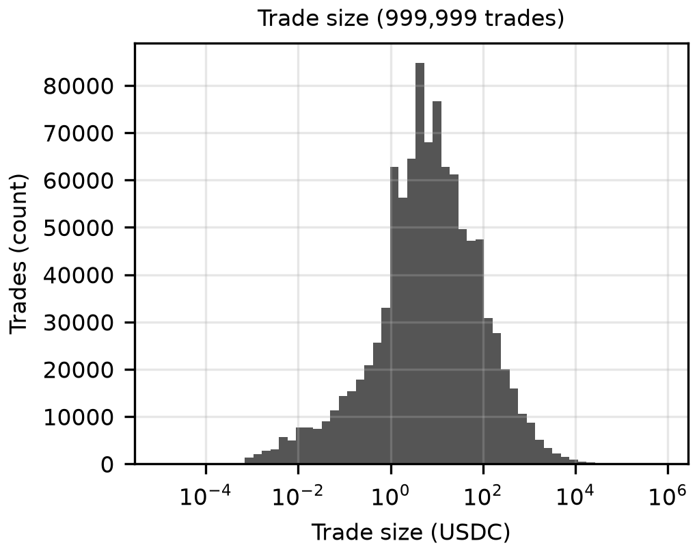
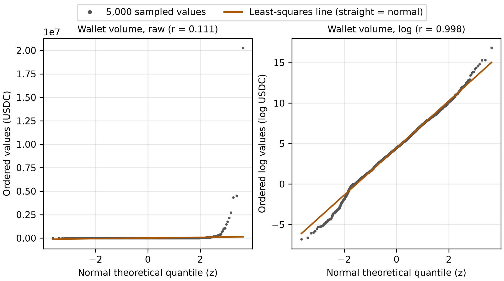
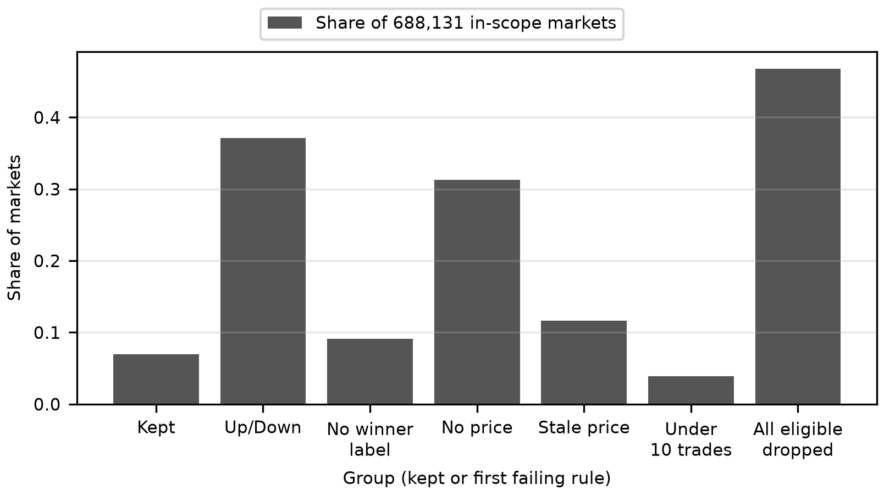
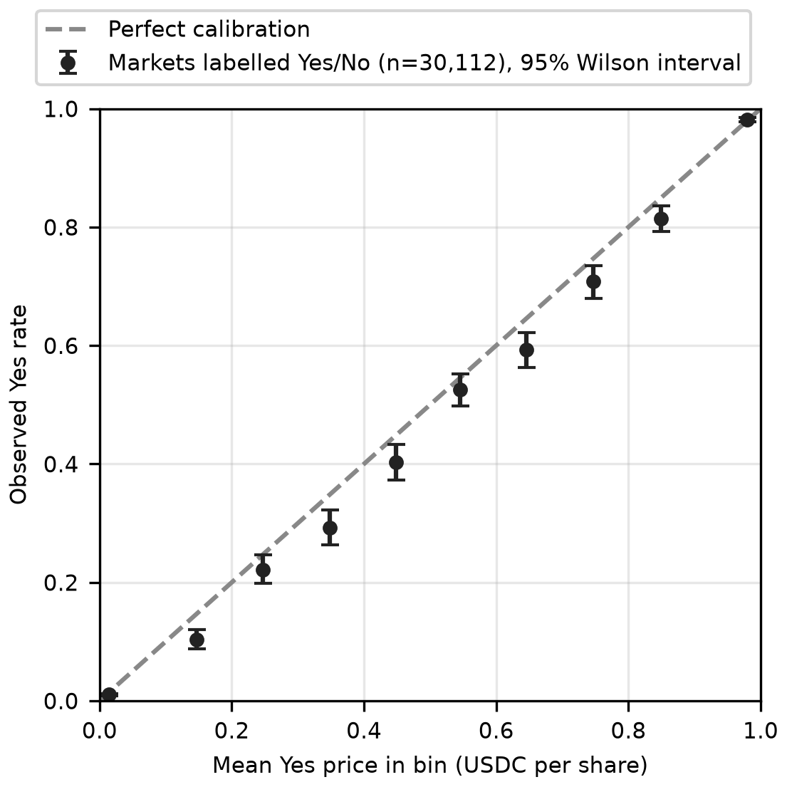

When Polymarket Says 70%, Does It Happen 70% of the Time?
Group 1 · Team Brier
Taek Lim · Zhugang Liu (Tony) · Francisco Cortez
CS 6344 Introduction to Data Science The University of Texas Rio Grande Valley (UTRGV)
Notes: Speaker: Intro (Taek Lim). About 30 seconds. Good morning. We are Group 1, Team Brier. Our question is simple: when Polymarket shows a price of 70%, does that event happen about 70% of the time? We answer it on real trade data, and each of us will present one of our three research questions.
Polymarket reports it called 98.4% of the 2026 midterm races right
News, November 2026
98.4%
of the midterm races called right, as Polymarket reports. Democrats won both chambers.
Source: Polymarket, as reported by KuCoin News and Quartz, Nov 2026. Self-reported.
Why we start here: it makes us ask what “right” really means.
Note: News only. These markets are not in our data.
Notes: Speaker: Intro (Taek Lim). About 30 seconds. Why: we open with a news story because it asks the question of our whole project. How: this is not our analysis. It is a news report, and the source line on the slide says where it comes from. Result: Polymarket reports that it called 98.4% of the 2026 midterm races right, and Democrats won both chambers. Polymarket reports this number itself, so it is self-reported. Meaning: it sounds like proof that the prices can be trusted. We want to check that carefully. One note before we go on: these midterm markets are news only. They are not in our data and not in our results.
Right 98% of the time is not the same as a true probability
Winner calling
Question: did the favorite win?
Score: how many races were called right.
Calibration
Question: do events priced at 70% happen 70% of the time?
Score: do the priced chances match how often events happen.
Illustrative values: 100 races priced at 90%. The favorite wins all 100, so it is 100% right. A calibrated 90% should lose about 10, so this price is not calibrated.
Our data: right 83.4% of the time at the 0.5 line, yet the chi-square test says the prices are not calibrated as a whole.
Notes: Speaker: Intro (Taek Lim). About 1 minute. Why: a high hit rate sounds like a good probability, but these are two different questions. How: winner calling asks whether the favorite won. Calibration asks whether events priced at 70% happen about 70% of the time. Here is a tiny example with illustrative values. Take 100 races priced at 90%. If the favorite wins all 100, the hit rate is 100%. But a calibrated 90% should lose about 10 of them, so these prices were not calibrated. Result: in our own data the markets are right 83.4% of the time at the 0.5 line, yet the chi-square test says the prices are not calibrated as a whole. Meaning: being right often does not make a price a true probability. That is the gap our project tests.
WhyHowResultMeaning
A Polymarket price is read as a probability
$1
A YES share
Pays $1 if the event happens, $0 if not.
→
$0.70
The price today
What the crowd pays for one share.
→
70%
Read as a chance
Readers take the price as the probability.
Why it matters: reading a price as a probability is the claim we test.
Source: README section 1
Notes: Speaker: Intro (Taek Lim). About 30 seconds. Why: before we test a claim, we must say what the claim is. How: a YES share on Polymarket pays one dollar if the event happens and nothing if it does not. If the share costs 70 cents, readers take that as a 70% chance. Result: this is a reading, not a measured fact. Meaning: if the reading is wrong, everyone who uses the price as a probability is misled. Reading a price as a probability is exactly the claim we test.
WhyHowResultMeaning
Three questions, one reason: can we trust the price?
Q1
Is the crowd right?
Do events priced at 70% happen about 70% of the time?
Matters: a price we can trust is a probability.
→
Q2
Who is the crowd?
Does a small group of wallets do most of the trading?
Matters: it shows who the crowd is. Volume is not price-setting power.
→
Q3
What does betting look like?
How are trade sizes, wallet volumes and prices spread?
Matters: the shape tells us which summary number is honest.
Source: README section 1, paper Section 1
Notes: Speaker: Intro (Taek Lim). About 45 seconds. Why: the hook gave us one question, so we split it into three. How: each question gets the same four steps. Why we did it, how we did it, what we got, and why it matters. Result: Q1 asks whether the crowd is right, meaning whether events priced at 70% happen about 70% of the time. Q2 asks who the crowd is, meaning whether a small group of wallets does most of the trading. Q3 describes what the betting looks like, meaning how trade sizes, wallet volumes and prices are spread. Meaning: Q1 tests the price directly. Q2 tells us who stands behind it, but volume is not price-setting power. Q3 tells us which summary number is honest.
WhyHowResultMeaning
We keep 47,948 of 688,131 markets (7.0%) for all three questions
Why filter: a price needs to exist, the outcome must be clear, and the market needs trades.
A price one day before close
A clear outcome
At least 10 trades
688,131 → 47,948
markets in scope → kept (7.0%)
Biggest drops: Up/Down markets 37.1%, no price one day before close 31.3%, stale price 11.7%.
Meaning: all three questions use the same markets.
Source: paper, Data section
Notes: Speaker: Intro (Taek Lim). About 1 minute. Why: a price is only useful if it exists before the market closes and the outcome is clear, so we filter. How: a market needs a clear winner, a price one day before it closes, and at least 10 trades. We fixed these rules before we saw any Q1 result. Result: the database holds 688,131 markets in scope and we keep 47,948, which is 7.0%. The biggest drops are Up/Down markets at 37.1%, no price one day before the close at 31.3%, and a stale price at 11.7%. Meaning: all three questions use the same 47,948 markets, so the three answers fit together. The result holds for markets that pass the filters.
WhyHowResultMeaning
The course asks for lecture methods, and we use them
Q1 Calibration
D6: Bernoulli and binomial model
D9, D10, D13: per-bin tests with Benjamini-Hochberg (BH) correction
D12: chi-square goodness of fit
D5: z interval
Q2 Wallets
D4, D5, D6: top shares against the 80/20 rule
D6, D7, D11: power-law tail and complementary cumulative distribution function (CCDF)
Outside the lectures, labeled in the paper: Lorenz curve · cluster bootstrap chi-square · logistic calibration · Brier skill score. D6 means the Lecture 6 deck.
Source: paper Section 4, README section 2
Notes: Speaker: Intro (Taek Lim). About 45 seconds. Why: the course asks us to use methods from the lectures, so we kept the analysis inside the course. How: the slide maps each lecture deck to a method and to a question. D6 means the Lecture 6 deck. Result: Q1 uses the binomial model, per-bin tests and the chi-square goodness of fit. Q2 uses top shares against the 80/20 rule, the CCDF and the role tests. Q3 uses histograms, QQ plots and distribution fits. Four methods lie outside the lectures, and the paper labels each one. Meaning: a reader can open the lecture deck and check each method against our use of it.
Q1 Calibration·Q2 Wallets·Q3 Distributions
WhyHowResultMeaning
Q1 why: a price helps only if we can trust it as a probability
Calibrated
Illustrative values: 100 events priced at 70%.
About 70 happen. The reader’s 70% is right.
Not calibrated
Illustrative values: 100 events priced at 70%.
Say only 60 happen. The reader is misled.
Q1 asks which one Polymarket prices are.
Source: paper Section 1
Notes: Speaker: Q1 speaker. About 30 seconds. Why: every use of a price as a probability rests on calibration, so Q1 comes first. How: calibration means that events priced at 70% happen about 70% of the time. The two boxes use illustrative values. If 100 events priced at 70% give about 70 events, the price is calibrated. If only 60 happen, the reader is misled. Result: this slide has no result yet. It sets the question. Meaning: a price we can trust is a probability. Q1 asks which of the two boxes describes Polymarket.
Q1 Calibration·Q2 Wallets·Q3 Distributions
WhyHowResultMeaning
Q1 how: bin the prices, compare, then test
1 Bin the prices
10 bins: 0 to 10%, 10 to 20%, up to 90 to 100%.
→
2 Compare
Observed rate of outcome 1 against the mean price, bin by bin.
→
3 Chi-square test
Goodness of fit on the 10 bins. The rule was fixed before the results.
→
4 Per-bin tests
Binomial test in each bin, with Benjamini-Hochberg (BH) correction.
Example: the 70 to 80% bin holds 2,301 markets. Mean price 74.6%, observed rate 71.3%.
Source: paper Section 4.2, Table 1
Notes: Speaker: Q1 speaker. About 1 minute 15 seconds. Why: we need a test that compares the price with what happened, and a rule we cannot bend after seeing the answer. How: step one splits the prices into 10 bins. Step two compares the observed rate of outcome 1 with the mean price in each bin. Step three is the chi-square goodness of fit test from Lecture 12. It decides the verdict as a whole, and we fixed this rule before we saw any result. Step four runs a binomial test in each bin with Benjamini-Hochberg correction, because ten tests at once need a correction. Take the 70 to 80% bin as an example. It holds 2,301 markets, the mean price is 74.6%, and the observed rate is 71.3%. Result: the next slides show it. Meaning: the order protects the verdict, because the rule came before the data.
Q1 Calibration·Q2 Wallets·Q3 Distributions
WhyHowResultMeaning
Q1 result: prices are not calibrated as a whole
Chi-square goodness of fit on 10 price bins: the prices do not match what happened.
χ² = 68.0
10 degrees of freedom, 47,948 markets
p = 1.1×10⁻¹⁰
assumes independent markets, so it may be too small
9 of 10 bins below 0
Source: paper Section 5.1
Notes: Speaker: Q1 speaker. About 1 minute 15 seconds. Why: this is the test we fixed before the results, so its answer is the Q1 verdict. How: it compares the observed counts in the 10 bins with the counts the prices predict. Result: the chi-square statistic is 68.0 with 10 degrees of freedom, and p is about 1.1 times ten to the minus ten. The verdict is that prices are not calibrated as a whole. The chart shows the gap in each bin, the observed rate minus the mean price. Nine of the ten bars are below zero. The p-value assumes independent markets, so it may be too small. Meaning: the prices do not match what happened, and the next slide shows how and by how much.
Q1 Calibration·Q2 Wallets·Q3 Distributions
WhyHowResultMeaning
In 9 of 10 bins, events happen less often than the price says
−0.99%
net gap over all 47,948 markets: small but one way
74.6% vs 71.3%
70 to 80% bin: priced vs observed
Points below the diagonal: priced too high

Source: paper Section 5.1
Notes: Speaker: Q1 speaker. About 1 minute 15 seconds. Why: a verdict of not calibrated does not say which way the prices miss, so we read the bins. How: the chart plots the observed rate against the mean price in each bin. A point on the diagonal would be perfect. Result: in nine of the ten bins the observed rate is below the mean price. Only the top bin, from 90 to 100%, is not. Over all 47,948 markets the net gap is minus 0.99%. The biggest gap is in the 70 to 80% bin, where the price is 74.6% and the observed rate is 71.3%. Meaning: the effect is small, but it runs in one direction. Outcome 1 is priced a little too high.
Q1 Calibration·Q2 Wallets·Q3 Distributions
WhyHowResultMeaning
Five checks later, the Q1 gap is still there
Why: reviewers asked if our choices create the gap.
Check
Key number
M1 Price rule
net gap −1.20%
M2 Yes/No labels
net gap −1.32%
M3 Event proxies
interval [−1.41%, −0.58%]
M4 Kept vs dropped
median volume 1,790 vs 69 USDC
M5 Practical size
largest gap 2.22%, line 1.57%
Original net gap: −0.99%.
M3: the whole interval stays below 0
Source: paper Section 5.4, Appendix G
Notes: Speaker: Q1 speaker. About 1 minute 15 seconds. Why: reviewers asked whether our choices create the gap, so we ran five checks. How: each new row sits next to the original Q1 result and does not replace it. Result: changing the price rule gives a net gap of minus 1.20%. Looking only at Yes/No markets gives minus 1.32%. The key one is M3. Markets on one event move together, so we group them with proxy keys, and the cluster bootstrap interval from minus 1.41% to minus 0.58% still lies below zero. M4 and M5 describe the kept markets and the size of the gap. Meaning: the gap does not come from one choice we made. Two backup slides show M1, M2 and M4 in more detail.
Q1 Calibration·Q2 Wallets·Q3 Distributions
WhyHowResultMeaning
Is the gap big? We measure its size three ways
3.29 points
largest per-bin gap (70 to 80% bin)
1.57%
practical line: the mean half spread
0 of 7
grid prices with the whole 95% band past the line
83.4% vs 63.4%
accuracy at the 0.5 line vs majority guess
Largest implied gap 2.22% against the 1.57% line

Source: paper Section 5.1, Appendix G (M5)
Notes: Speaker: Q1 speaker. About 1 minute 15 seconds. Why: with this many markets, a tiny gap gives a tiny p-value, so a small p alone does not tell us whether the gap matters. How: we look at size three ways. The largest per-bin gap, a practical line, and plain accuracy. The practical line is the mean half spread of 1.57%. Result: the largest per-bin gap is 3.29 points. The largest implied gap is 2.22%, above the line as a point estimate. But a price passes only when its whole 95% band lies beyond the line, and 0 of 7 grid prices do. Accuracy at the 0.5 line is 83.4% against 63.4% for always guessing the majority. We set no size line before the results, so small is our reading. Meaning: the gap is real in direction but we cannot say it is surely larger than the cost of trading.
Q1 Calibration·Q2 Wallets·Q3 Distributions
WhyHowResultMeaning
Q1 meaning: prices run a little high, in one direction
What we found
Prices are not calibrated as a whole. 9 of 10 bins are below the price. Net gap −0.99%.
The hook, answered
Right 83.4% of the time does not mean calibrated. χ² = 68.0 says the prices miss.
Why prices run high
[Owner: why prices run high]
Source: paper Section 5.1 and Discussion
Notes: Speaker: Q1 speaker. About 1 minute 15 seconds. Why: the numbers only matter if we say what they mean. How: we put the Q1 result next to the hook. Result: prices are not calibrated as a whole. The effect is small and runs one way, with a net gap of minus 0.99%. Meaning: this answers the hook. A market can be right 83.4% of the time and still have prices that are not calibrated, because being right often and being calibrated are different things. The third box is a placeholder. The owner has not yet written why the prices run high, and we do not invent a reason. Fill this in before the talk.
Q1 Calibration·Q2 Wallets·Q3 Distributions
WhyHowResultMeaning
Q2: who is the crowd? We measure how concentrated volume is
Why: a price is the crowd’s price, so we ask who the crowd is. How: four steps.
1 Rank wallets
By USDC volume, makers and takers apart.
→
2 Top shares
Share of volume held by the top 1% and top 20%.
→
3 CCDF
Complementary cumulative distribution function (CCDF): wallets above each volume, log axes.
→
4 Lorenz curve
Volume share against wallet share, next to the 80/20 line. Outside the lectures.
Source: paper Section 4.3, Section 5.2
Notes: Speaker: Q2 speaker. About 1 minute 15 seconds. Why: a price is the crowd’s price, so before we trust it we ask who the crowd is. Does a small group of wallets do most of the trading. How: step one ranks the wallets by their volume in USDC, a dollar-pegged token, and we do this for makers and takers apart. Step two measures the share of volume held by the top 1% and the top 20% of wallets, and compares it with the 80/20 rule, which says the top 20% hold 80%. Step three draws the complementary cumulative distribution function, CCDF, on log axes. Step four draws the Lorenz curve, which is outside the lectures and which the paper labels as such. Result: the next slide. Meaning: a wallet is an address, not a person, so we describe concentration of volume and do not test who sets the prices.
Q1 Calibration·Q2 Wallets·Q3 Distributions
WhyHowResultMeaning
The top 20% of wallets hold 98.9% of maker volume
CCDF: the tail bends down
Far below equality
98.9%
makers, top 20% of wallets
98.0%
takers, top 20% of wallets
Share of USDC volume. The 80/20 rule predicts 80.0%. Top 1%: 86.1% and 75.9%.
Source: paper Section 5.2
Notes: Speaker: Q2 speaker. About 1 minute 15 seconds. Why: we want to see how far volume is concentrated compared with a familiar reference. How: we rank wallets by USDC volume and read the shares. The left chart is the CCDF and the middle chart is the Lorenz curve. Result: the top 20% of wallets hold 98.9% of maker volume and 98.0% of taker volume. The 80/20 rule would predict 80.0%. The top 1% alone hold 86.1% of maker volume and 75.9% of taker volume. In the CCDF the tail bends downward, so it is not a straight line. The Lorenz curve sits far below the equality line. Meaning: this far exceeds the 80/20 rule. We describe it without a pre-registered verdict.
Q1 Calibration·Q2 Wallets·Q3 Distributions
WhyHowResultMeaning
Makers and takers, side by side
t = 117.1
Welch t-test on log volume (p below 10⁻³⁰⁰)
0.219
mean log10 volume: makers 2.104, takers 1.885
D = 0.057
Kolmogorov-Smirnov (KS) statistic
ρ = 0.655
Spearman: trade count and volume
Color: top 20%. Gray: bottom 80%

Source: paper Section 5.2, Appendix D
Notes: Speaker: Q2 speaker. About 1 minute 30 seconds. Why: the crowd has two roles, makers and takers, so we check whether they differ. How: we compare log volume with a Welch t-test and a KS test, and we correlate trade count with volume using Spearman. The figure shows, for each role, the wallet distribution, the volume distribution and the Lorenz curve, with the top 20% in color. Result: the Welch t statistic is 117.1. The difference in mean log10 volume is 0.219, makers 2.104 and takers 1.885. The KS statistic is 0.057, and the Spearman correlation between trade count and volume is 0.655. Mean volume sits far above median volume in both roles. Makers have 14,103 against a median of 101.2 USDC, and takers have 5,339 against 86.6. Meaning: both roles are strongly skewed, and the volume sits with a few wallets in each. The Welch p-value is a float-underflow bound, not an exact value.
Q1 Calibration·Q2 Wallets·Q3 Distributions
WhyHowResultMeaning
Q2 meaning: a small group of wallets carries the volume
What we can say
By USDC volume, the top wallets do most of the trading. Top 20%: 98.9% of maker and 98.0% of taker volume.
What we do not say
Who sets the prices. That a wallet is a person. That volume follows a power law.
For reading a price
[Owner: what concentrated volume means for reading a price]
Source: paper Section 5.2, Discussion, Limitations
Notes: Speaker: Q2 speaker. About 1 minute. Why: the result only helps if we say what it allows us to claim. How: we follow the paper’s own wording. Result: by USDC volume, the top wallets do most of the trading, in both roles, far beyond the 80/20 reference. Meaning: this is a statement about concentration of volume. We do not test who sets the prices, and a wallet is an address, so one owner may control many. We also do not say wallet volume follows a power law, because the test rejects an exact power law. The third box is a placeholder. The paper has no interpretation yet of what concentrated volume means for a reader of the price, so the owner must write it. We do not invent one.
Q1 Calibration·Q2 Wallets·Q3 Distributions
WhyHowResultMeaning
Q3: why the shape matters, and how we look at it
Why: with a long tail, the mean misleads. The shape tells us which summary to trust.
1 Histogram
Count the values in bins and see the shape.
→
2 QQ plot
Compare the values with the normal. A straight line means close to normal.
→
3 Log transform
Plot the QQ again on log values.
→
4 Fits
Normal, exponential and power law, scored by the KS statistic.
Illustrative values: trades of 1, 2, 3 and 1,000 USDC. The mean is 251.5, the median is 2.5.
Source: paper Section 4.4, Section 5.3
Notes: Speaker: Q3 speaker. About 1 minute. Why: a mean can mislead when a few values are huge, so we check the shape before we pick a summary. How: step one is a histogram. Step two is a QQ plot against the normal, where points on a straight line mean close to normal. Step three repeats the QQ plot on log values. Step four fits a normal, an exponential and a power law and scores each with the KS statistic. Here is a tiny example with illustrative values. Four trades of 1, 2, 3 and 1,000 USDC have a mean of 251.5 but a median of 2.5. The mean describes none of the trades. Result and meaning: the next slides use our real data.
Q1 Calibration·Q2 Wallets·Q3 Distributions
WhyHowResultMeaning
Trade sizes: a few huge trades pull the mean far up

Raw points bend away, log points follow the line
129.8
mean trade size, USDC
6.9
median trade size, USDC
D = 0.469
normal fit KS statistic: a poor fit
Source: paper Section 5.3
Notes: Speaker: Q3 speaker. About 1 minute. Why: trade size is the basic unit of betting, so its shape tells us what a typical trade is. How: a histogram, and a QQ plot against the normal, raw and after a log transform. Result: the mean trade size is 129.8 USDC but the median is only 6.9. In the QQ plot the raw points bend away from the straight line and the log points follow it much better. The normal fit has a KS statistic of 0.469, which is a poor fit. Meaning: a few very large trades pull the mean far above the typical trade, so the median and the log scale describe the data better. We report this without a verdict.
Q1 Calibration·Q2 Wallets·Q3 Distributions
WhyHowResultMeaning
Prices pile up near the ends, wallet volume is skewed
Price one day before close
Wallet volume, raw and log

0.376 vs 0.320
price one day before close: mean vs median
14,103 vs 101.2
maker volume: mean vs median, USDC
5,339 vs 86.6
taker volume: mean vs median, USDC
Source: paper Section 5.3, Appendix E
Notes: Speaker: Q3 speaker. About 1 minute. Why: Q1 uses the price and Q2 uses wallet volume, so we check their shapes too. How: a histogram of the price one day before close, and a QQ plot of wallet volume, raw and log. Result: prices pile up near both ends of the scale, with a mean of 0.376 and a median of 0.320. Wallet volume is strongly skewed. Makers have a mean of 14,103 USDC against a median of 101.2, and takers have 5,339 against 86.6. Meaning: the same long-tail shape appears in the prices and in the wallets. We report it without a verdict.
Q1 Calibration·Q2 Wallets·Q3 Distributions
WhyHowResultMeaning
Q3 meaning: read the median and the log scale
Use the median
A few huge trades pull the mean far up. Mean 129.8 vs median 6.9 USDC.
Use the log scale
After a log transform the points follow the normal line much better.
Power-law x_min
[Owner: x_min choice for the power-law fit]
Source: paper Section 5.3, Discussion
Notes: Speaker: Q3 speaker. About 1 minute. Why: a description is only useful if it tells a reader how to read the numbers. How: we compare the mean with the median and the raw QQ plot with the log QQ plot. Result: trade sizes are strongly right skewed and prices cluster near the ends. Meaning: use the median and the log scale, because a few huge trades pull the mean far above the typical trade. We describe the data and give no verdict. The third box is a placeholder. The choice of the lower cutoff for the power-law fit is still an open item in the paper, and the owner will write it. We do not explain it here.
Limits: read the results as measured patterns, not as proof of cause
Narrow sample
Only 47,948 of 688,131 markets (7.0%) pass the filters.
No true event key
Markets on one event move together, so the p-values are optimistic.
One day before close
Markets keep trading after close. Our price day rests on a one-month pilot.
A wallet is an address
One owner may control many addresses. Volume is not price-setting power.
Source: paper, Limitations section
Notes: Speaker: Intro (Taek Lim). About 45 seconds. We want to be clear about what this study cannot say. We keep only 7.0% of the markets, so the result holds for markets that pass our filters. The data has no true event key, so markets on the same event move together and our p-values are optimistic. We price one day before the close, and that choice rests on a one-month pilot. Finally, a wallet is an address and not a person, and one pre-registered rule was changed after we saw a result, which we report as an amendment.
WhyHowResultMeaning
What we did end to end, and why the order matters
1 Pilot first
Inspect only. No price is paired with an outcome.
→
2 Fix the rules
Close time, 10 trades, price day: written before any Q1 result.
→
3 Run on all
One run on all markets with the fixed rules.
→
4 Checks
Each check sits next to the verdict and never replaces it.
→
5 Saved runs
Every number comes from a saved run file.
Why it matters: fixing the rules first keeps the cutoff from following the result.
Source: README “How we got here”, D-005, D-007
Notes: Speaker: Intro (Taek Lim). About 45 seconds. Why: a result is only as good as the order in which we got it. How: we worked in five steps. First a pilot that only inspects the data and never pairs a price with an outcome. Second we fixed the rules, the close time, the minimum of 10 trades and the price day, and we wrote them down before any Q1 result. Third we ran all markets with those fixed rules. Fourth we ran checks, and each check sits next to the original verdict and never replaces it. Fifth every number in the paper comes from a saved run file. Result: the verdict you saw is the one the fixed rule gave. Meaning: if the cutoff could follow the result, the verdict would be worth little. Fixing the rules first protects it. One rule was changed after we saw a result, and we report it as an amendment.
Not exactly: prices are not calibrated as a whole, in one small direction
Q1
−0.99%
net gap: observed rate minus price, over 47,948 markets
Q2
98.9%
of maker volume held by the top 20% of wallets
Q3
129.8
USDC mean trade size, against a median of 6.9
Back to the hook: being right often is not the same as being calibrated.
Notes: Speaker: Intro (Taek Lim). About 1 minute. Why: we started with one question, so we end with its answer. How: we read Q1, Q2 and Q3 together. Result: can a Polymarket price be read as a probability? Not exactly. On 47,948 markets the prices are not calibrated as a whole. The net gap is minus 0.99%, which is small but runs in one direction. By volume, the top 20% of wallets hold 98.9% of maker volume. Trade sizes are strongly right skewed, with a mean of 129.8 USDC and a median of 6.9. Meaning: back to the news story. A market can be right most of the time and still have prices that are not calibrated. In our data it is right 83.4% of the time at the 0.5 line, and the prices still miss. These are measured patterns, not proof of cause.
Questions?
Thank you
Taek Lim · Zhugang Liu (Tony) · Francisco Cortez
Notes: Speaker: all three. About 30 seconds. Thank you for listening. We are happy to take questions. Backup slides follow this one if you want to see how we handled the 7% sample, the kept and dropped markets, the Lorenz curve, the practical size of the gap, the price rule and Yes/No labels, or what outcome 1 means.
Backup
You kept 7%. Do the kept markets represent all of them?
Not fully. Our selection is narrow, so we show how kept and dropped markets differ.
Kept markets trade much more. Sports is 49.7% of markets in scope but 40.0% of kept markets.
Without the minimum-trade filter (74,474 markets), the Q1 direction holds: 9 of 10 bins below the price.
1,790 vs 69
median USDC volume before one day to close, kept vs dropped (M4)
−1.03%
net gap without the minimum-trade filter, against −0.99% with it
Source: paper, Limitations section and M4
Notes: Backup. Speaker: Q1 speaker. Short answer: not fully. Only 7.0% of markets pass our filters, and the paper says so in its limitations. Check M4 compares kept and dropped markets, and the kept ones have a median volume of 1,790 USDC against 69 for the dropped. Sports is 49.7% of markets in scope but 40.0% of kept markets. When we remove the minimum-trade filter, 74,474 markets remain, the net gap is minus 1.03%, and nine of ten bins still sit below the price.
Backup
How do the kept markets differ from the dropped ones?
1,790 vs 69
median USDC volume before one day to close, kept vs dropped
292.5 vs 17
median trades, kept vs dropped
M4 is descriptive and adds no verdict.

Source: paper Appendix G (M4)
Notes: Backup. Speaker: Q1 speaker. Check M4 compares the kept markets with the dropped ones. The kept markets have a median volume of 1,790 USDC before one day to close, and the pooled eligible dropped markets have 69. The median number of trades is 292.5 for kept markets and 17 for dropped ones. This is descriptive and adds no verdict. It is why we say our result holds for markets that pass the filters.
Backup
Does the price rule or the Yes/No label create the gap?
M1: net gap under each price rule
M2: Yes/No markets, Yes rate vs Yes price

M1: volume-weighted price, net gap −1.20%. M2: Yes/No markets (30,112), net gap −1.32%. Other markets (17,836) show no rejection.
Source: paper Appendix G (M1, M2)
Notes: Backup. Speaker: Q1 speaker. Check M1 asks whether the price definition drives the gap. Under the volume-weighted price the net gap is minus 1.20%, and the interval lies below zero, so the price rule does not create the gap. Check M2 splits the markets by label. In the 30,112 markets labeled Yes or No, Yes is priced above its observed rate, with a net gap of minus 1.32%. The other 17,836 markets show no rejection. Elsewhere we keep the term outcome 1.
Backup
The Lorenz curve is not in the lectures. Why use it?
The paper labels it as outside the lectures.
It shows the whole curve of volume share against wallet share, next to the 80/20 reference.
It carries no verdict. The closest lecture idea is the CCDF (Lecture 6). The other outside methods: cluster bootstrap chi-square, logistic calibration, Brier skill score.
98.9%
volume share of the top 20% of maker wallets
80.0%
the 80/20 reference
Source: paper Section 4, README section 2
Notes: Backup. Speaker: Q2 speaker. The Lorenz curve is not in the lecture decks, and the paper already says so. We use it because one top-share number hides the shape. The curve shows the whole path of volume share against wallet share, next to the 80/20 reference line. It carries no verdict. The closest idea from the lectures is the complementary CDF from Lecture 6, and we show both.
Backup
The gap is 1 point but p is 10⁻¹⁰. Does it matter in practice?
The effect is small and runs one way. With this many markets, a tiny gap gives a tiny p-value, so we read effect sizes first.
We set no size line before the results, so “small” is our reading. The p-value also assumes independent markets.
3.29 points
largest per-bin gap (70 to 80% bin)
−0.99%
net gap over 47,948 markets
1.57%
practical line (M5, mean half spread). Largest implied gap 2.22%, but at 0 of 7 grid prices is the whole 95% band beyond the line.
Source: paper Section 5.1, M5
Notes: Backup. Speaker: Q1 speaker. With almost 48,000 markets, even a tiny gap gives a tiny p-value, so we read the effect size first. The net gap is minus 0.99%, and the largest per-bin gap is 3.29 points. We set no size line before seeing results, so calling it small is our reading. Check M5 adds a practical line, the mean half spread of 1.57%. The largest implied gap is 2.22%, above the line as a point estimate. But a price passes only when its whole 95% bootstrap band lies beyond the line, and 0 of 7 grid prices do. So we cannot say the gap is surely larger than the cost of trading.
Backup
What is outcome 1? Why not switch to Yes?
Outcome 1 is the first-listed outcome of a market. It is not always labeled Yes.
A gate review found that “Yes is priced too high” named a label no saved file showed. So the paper says “outcome 1”.
Among the Yes-labeled markets alone, the rate is below the price in 9 of 9 bins (bins 0 to 8).
63.9%
of kept markets label outcome 1 as Yes (30,630)
0.4 to 5.6
percentage points: gaps in the Yes-labeled markets
Source: paper Section 5.1, README step 16
Notes: Backup. Speaker: Q1 speaker. Outcome 1 is the first-listed outcome of a market. In 63.9% of the kept markets, or 30,630, it is labeled Yes. A gate review found that saying Yes is priced too high named a label that no saved file showed. So the paper says outcome 1 instead. Among the Yes-labeled markets alone, nine of nine bins from 0 to 8 are below the price, with gaps of 0.4 to 5.6 percentage points. This is descriptive and adds no new test.